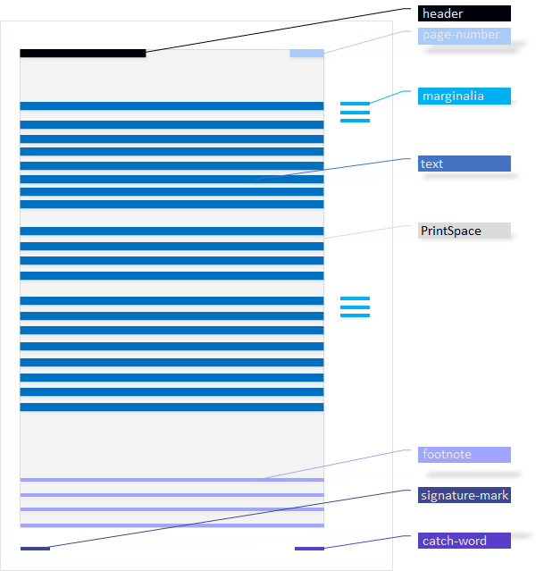

Print Space
In typography, the area of a book page that can actually be used (single or double page) is called the print space. It is the same for all pages of a book, with the possible exception of the title page and multi-page images. In terms of elements, it contains the body text of a page, including footnotes, headings, and living column titles. In contrast, the page number (if not part of the column title), marginalia, custodes, and signature mark are not added.
After the type of a page is set, the print space is looked at before the individual text regions are set.
